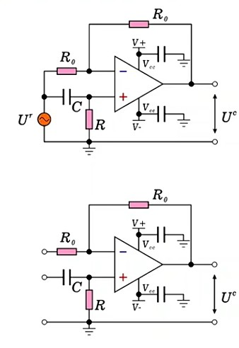
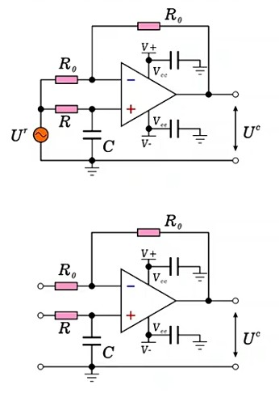

第一章 全通滤波器总论
在信号处理领域，有一类特殊的电路：它对所有频率的信号都"一视同仁"地通过，增益恒为1（0dB），既不放大也不衰减——这就是全通滤波器（All-Pass Filter）。然而，"全通"这个名字极具误导性，因为它真正的功能并非"通过"，而是移相——只改变信号的相位，不改变信号的幅度。正因如此，很多工程师认为：全通滤波器真该改个名，叫移相器才对。
1.1 为什么叫"全通"又该改名
传统滤波器按功能可分为低通、高通、带通、带阻四类，它们共同的特点是对不同频率的信号有不同的增益——某些频率通过，某些频率被衰减。"全通滤波器"这个名字让人误以为它也是一种"滤波"器件，但事实是：它对所有频率的增益恒为1，根本不滤任何东西。
它唯一的功能是改变信号的相位，而且相移量随频率变化。因此，"移相器"（Phase Shifter）才是更准确、更直观的名称。在工程文献中，这两个名称常常混用，但理解电路本质时，务必记住：全通滤波器 = 移相器，核心功能是移相而非滤波。
1.2 传递函数与特征参数
一阶全通滤波器的标准传递函数为：
其中 $T$ 为时间常数，决定了电路的频率特性。这个传递函数虽然形式简单，但蕴含着丰富的物理含义。下面逐一分析其核心参数。
| 参数 | 表达式 | 物理含义 |
|---|---|---|
| 增益 $K$ | $K = 1$（即 $20\lg K = 0\text{dB}$） | 输出幅度始终等于输入幅度，与频率无关 |
| 特征角频率 $\omega_0$ | $\omega_0 = \dfrac{1}{T}$ | 相移为90°时的角频率，是移相特性的中心参考点 |
| 特征频率 $f_0$ | $f_0 = \dfrac{1}{2\pi T}$ | 以Hz为单位的特征频率，工程中更常用 |
| 相移范围 | $180° \to 0°$ | 低频时相移接近180°，高频时趋近0°，单调递减 |
| $f_0$ 处相移 | $\varphi(\omega_0) = 90°$ | 在特征频率点，相移恰好为90° |
1.2.5 从传递函数到特征参数：完整推导路径
上面的表格给出了传递函数的所有特征参数，但你可能会问：这些信息究竟是怎么从 G(s) 一步步推出来的？本节将给出完整的推导路线图，让你看到每一条结论的"来路"。
步骤一：令 s = jω，进入频率域
传递函数在 s 域，要分析频率特性，必须代入 $s = j\omega$：
这是所有后续推导的唯一出发点。无论推导增益、特征频率还是相移，都从这个表达式开始。
步骤二：引入 ω₀ = 1/T，标准化表达
令 $\omega_0 = 1/T$（即 $T = 1/\omega_0$），代入上式：
特征频率 $\omega_0$ 的物理本质是分母的转折频率——分母 $1 + j\omega/\omega_0$ 在 $\omega = \omega_0$ 时，实部和虚部相等，这是频率特性的关键分界点。就像低通滤波器的截止频率一样，$\omega_0$ 定义了全通滤波器相频特性的"中心"。
步骤三：推导增益 K = 1
取 $G(j\omega)$ 的模，分子模和分母模分别计算：
分子和分母的模完全相等！根本原因在于分子的 $(-1)$ 平方后等于 $(+1)$，与分母的 $(+1)$ 完全抵消。因此：
步骤四：推导相频特性公式
相移 = 分子辐角 − 分母辐角。要计算辐角，首先要掌握复数辐角的 arctan 计算法则——这是本步骤的前置知识，也是极容易踩坑的地方。
任意复数 $a + jb$ 的辐角为 $\theta = \arctan(b/a)$，但 arctan 函数的值域只有 $(-90°, +90°)$，而复数辐角的范围是 $(-180°, +180°)$。因此必须根据实部 $a$ 的正负号判断象限，对 arctan 结果进行修正：
| 象限 | 实部 $a$ | 虚部 $b$ | 辐角公式 | 角度范围 |
|---|---|---|---|---|
| 第一象限 | $a > 0$ | $b > 0$ | $\theta = \arctan\dfrac{b}{a}$ | $0° \sim 90°$ |
| 第二象限 | $a < 0$ | $b > 0$ | $\theta = \pi - \arctan\dfrac{b}{|a|}$ | $90° \sim 180°$ |
| 第三象限 | $a < 0$ | $b < 0$ | $\theta = -\pi + \arctan\dfrac{|b|}{|a|}$ | $-180° \sim -90°$ |
| 第四象限 | $a > 0$ | $b < 0$ | $\theta = \arctan\dfrac{b}{a}$ | $-90° \sim 0°$ |
掌握了这个法则后，分别计算分子和分母的辐角：
分母：$1 + j\frac{\omega}{\omega_0}$
实部 $= +1 > 0$，虚部 $= \omega/\omega_0 > 0$，位于第一象限
实部为正，直接 arctan，无需修正：
分子：$-1 + j\frac{\omega}{\omega_0}$
实部 $= -1 < 0$，虚部 $= \omega/\omega_0 > 0$，位于第二象限
实部为负，必须用 $\pi$ 修正：
总相移：
利用恒等式 $\arctan x + \arctan(1/x) = \pi/2$（$x > 0$），可以改写为更直观的形式：
步骤五：推导相移范围 180° → 0°
将极限代入相频公式，验证两个极端情况：
| 频率条件 | 代入计算 | 结果 | 物理含义 |
|---|---|---|---|
| $\omega \to 0$（直流） | $\varphi = \pi - 2\arctan(0) = \pi - 0$ | $180°$ | 极低频时输出与输入反相 |
| $\omega \to \infty$（高频） | $\varphi = \pi - 2\arctan(\infty) = \pi - \pi$ | $0°$ | 极高频时输出与输入同相 |
步骤六：推导 f₀ 处相移 = 90°
在 $\omega = \omega_0$ 时代入：
推导路线图总结
| 表中参数 | 推导关键步骤 | 核心数学工具 | 关键洞察 |
|---|---|---|---|
| $\omega_0 = 1/T$ | 令 $T = 1/\omega_0$ 代入 $G(j\omega)$ | 代数替换 | $\omega_0$ 是分母的转折频率 |
| $f_0 = 1/(2\pi T)$ | $f_0 = \omega_0/(2\pi)$ | 角频率→频率换算 | 工程中最常用的频率表示 |
| $K = 1$（0dB） | 分子模 = 分母模，因 $(-1)^2 = 1^2$ | 取模运算 | 负号平方后与正号抵消 |
| 相移范围 180°→0° | 代入 $\omega \to 0$ 和 $\omega \to \infty$ | 极限分析 | 低频反相、高频同相 |
| $f_0$ 处 90° | 代入 $\omega = \omega_0$，$\arctan(1) = 45°$ | 特殊值代入 | 相移中点=特征频率 |
1.3 幅频特性——恒定增益的证明
全通滤波器最显著的特征是增益恒为1，下面从传递函数出发严格证明这一点。
正弦稳态分析
在正弦稳态条件下，令 $s = j\omega$，并定义 $\omega_0 = 1/T$，传递函数变为：
取模计算
分子的模：
分母的模：
分子与分母的模完全相等！因此对数幅频特性为：
1.4 相频特性——复平面向量推导
相频特性是全通滤波器的灵魂所在。用复平面向量法可以给出一种极其直观的推导，比纯代数方法更易理解。
复平面向量表示
将正弦稳态传递函数的分子和分母分别看作复平面上的向量：
- 分子向量（蓝色）：$\vec{N} = -1 + j\frac{\omega}{\omega_0}$，实部 $= -1$（常数），虚部随 $\omega$ 变化
- 分母向量（红色）：$\vec{D} = 1 + j\frac{\omega}{\omega_0}$，实部 $= +1$（常数），虚部随 $\omega$ 变化
几何推导过程
- 绘制两个向量：在复平面上，分子向量从原点指向 $(-1, \omega/\omega_0)$，分母向量从原点指向 $(1, \omega/\omega_0)$。两个向量的虚部相同，实部关于虚轴对称。
- 识别相位关系：两个向量关于虚轴构成全等三角形，它们与虚轴的夹角相等。设分母向量与虚轴的夹角为 $\alpha$。
- 计算单个夹角：$\alpha$ 的正切值 = 对边/邻边 = $1 / (\omega/\omega_0)$，因此 $\alpha = \arctan(\omega_0/\omega)$。
- 求总相移：$G(j\omega)$ 的辐角 = 分子辐角 - 分母辐角。由对称性可知，两者与虚轴夹角相同，总相移恰好等于 $2\alpha$。
1.5 特殊频率点的相移验证
通过代入三个特殊频率值，可以验证相频特性的正确性：
| 频率条件 | $\omega/\omega_0$ | $\alpha = \arctan(\omega_0/\omega)$ | $\varphi = 2\alpha$ | 物理含义 |
|---|---|---|---|---|
| $\omega \to 0$（直流） | $\to 0$ | $\arctan(\infty) = 90°$ | $180°$ | 极低频时输出与输入反相 |
| $\omega = \omega_0$（特征频率） | $= 1$ | $\arctan(1) = 45°$ | $90°$ | 特征频率处相移恰好90° |
| $\omega \to \infty$（高频） | $\to \infty$ | $\arctan(0) = 0°$ | $0°$ | 极高频时输出与输入同相 |
相频特性随频率增加从180°单调递减至0°，在特征频率 $\omega_0$ 处刚好过90°中点。这一对称而优雅的特性，使得移相器在工程设计中极具实用价值——只要知道目标频率和目标相移，就可以精确计算所需的RC时间常数。
第二章 超前移相器
理论模型建立之后，关键问题是：如何用实际电路实现这个传递函数？第一种实现形式是超前移相器——在差分放大器的基础上，将其中一个电阻替换为电容，实现频率相关的移相功能。
2.1 超前移相器的定义
对于传递函数 $G(s) = \frac{Ts-1}{Ts+1}$，相频特性 $\varphi(\omega) = 2\arctan(\omega_0/\omega)$ 始终为正值（0°~180°），因此属于超前型移相器。这意味着在任意频率下，输出信号的相位都超前于输入信号。
2.2 电路结构与叠加分析
超前移相器的电路结构源自差分放大器，但将同相端的接地电阻替换为电容 $C$。关键特征是：同一个信号源 $U_r$ 同时接到同相端和反相端，因此本质上是多输入系统，需要用叠加原理分析。

叠加分析步骤
虽然只有一个信号源 $U_r$，但它同时作用于同相端和反相端。根据叠加原理，分别计算每个输入端单独作用的输出，再将结果相加。
同相端单独作用
反相端信号置零（接地），$U_r$ 经 RC 分压后进入同相放大器。
- 同相端电压：$U_+ = \dfrac{RCs}{RCs + 1} U_r$
- 同相放大器增益：$1 + \dfrac{R_0}{R_0} = 2$
- 同相端贡献：$U_{c1} = \dfrac{2RCs}{RCs + 1} U_r$
反相端单独作用
同相端信号置零（通过电阻接地），$U_r$ 经反相放大器。
- 反相放大器增益：$-\dfrac{R_0}{R_0} = -1$
- 反相端贡献：$U_{c2} = -U_r$
2.3 传递函数推导
将同相端和反相端的贡献叠加：
提取公因子 $U_r$ 并通分：
令 $T = RC$，得到传递函数：
这与全通滤波器的标准传递函数完全一致！证明超前移相器电路确实实现了全通滤波器的传递函数。
2.4 完整参数与交互仿真
| 参数 | 表达式 | 数值（示例） |
|---|---|---|
| 传递函数 | $G(s) = \dfrac{Ts-1}{Ts+1}$ | — |
| 增益 | $K = 1$（$0\text{dB}$） | 始终为1 |
| 时间常数 | $T = RC$ | 取决于元件值 |
| 特征角频率 | $\omega_0 = \dfrac{1}{RC}$ | — |
| 特征频率 | $f_0 = \dfrac{1}{2\pi RC}$ | — |
| 相频特性 | $\varphi(\omega) = 2\arctan\dfrac{\omega_0}{\omega}$ | $180° \to 0°$ |
| 用频率表示 | $\varphi(f) = 2\arctan\dfrac{1}{2\pi RCf}$ | — |
交互仿真
调整 R 和 C 的值，观察相频特性的变化：
第三章 滞后移相器
超前移相器的"镜像"就是滞后移相器——只需将 R 和 C 的位置互换，输出信号的相位就从"超前"变为"滞后"。这一章将详细分析滞后移相器的推导过程，特别关注传递函数中多出的那个"负号"对相频特性的深刻影响。
3.1 电路结构差异
滞后移相器与超前移相器的唯一区别：R 和 C 的位置互换。在超前移相器中，电容 C 在前（接信号源侧）、电阻 R 在后（接地侧）；在滞后移相器中，电阻 R 在前、电容 C 在后。

超前移相器
- 同相端：C 在前，R 在后
- RC 分压在电容上取电压
- 相移：$0° \sim +180°$（超前）
滞后移相器
- 同相端：R 在前，C 在后
- RC 分压在电容上取电压
- 相移：$0° \sim -180°$（滞后）
3.2 传递函数推导
同样用叠加原理分析。反相端单独作用的结果不变：$U_{c2} = -U_r$。区别在于同相端的分压关系。
同相端分析
电阻在前、电容在后时，同相端电压取自电容上的分压：
经过同相放大器（增益=2），同相端贡献为：
叠加求总输出
通分：
令 $T = RC$，传递函数为：
3.3 相频特性修正
超前移相器的相频特性为 $\varphi(\omega) = 2\arctan(\omega_0/\omega)$（0°~180°）。滞后移相器多了一个负号，相当于附加了 $-180°$ 的相移（负号在频域对应 $\pm 180°$ 的相位偏移，我们取 $-180°$）：
用频率表示：
特殊频率点验证
| 频率条件 | $2\arctan(\omega_0/\omega)$ | $\varphi = -180° + 2\arctan$ | 物理含义 |
|---|---|---|---|
| $\omega \to 0$ | $180°$ | $-180° + 180° = 0°$ | 低频时输出与输入同相 |
| $\omega = \omega_0$ | $90°$ | $-180° + 90° = -90°$ | 特征频率处滞后90° |
| $\omega \to \infty$ | $0°$ | $-180° + 0° = -180°$ | 高频时输出与输入反相 |
第四章 工程设计与拓展
理论分析只是第一步，真正的工程师必须能将理论转化为实际电路。本章以50Hz滞后90°移相器的设计为例，完整展示从需求到参数计算到仿真验证的全过程，并分析实际工程中的误差来源和典型应用。
4.1 50Hz滞后90°移相器设计
设计需求
设计一个在50Hz频率点产生-90°相移的滞后移相器。
设计步骤
- 建立方程：滞后移相器相频特性为 $\varphi(f) = -180° + 2\arctan\frac{1}{2\pi RCf}$。要求在 $f = 50$Hz 处 $\varphi = -90°$，代入得：$-90° = -180° + 2\arctan\frac{1}{2\pi RC \times 50}$
- 化简方程：移项得 $2\arctan\frac{1}{2\pi RC \times 50} = 90°$，即 $\arctan\frac{1}{2\pi RC \times 50} = 45°$
- 去掉反正切：两边取正切，$\frac{1}{2\pi RC \times 50} = \tan 45° = 1$
- 求解 RC：$RC = \frac{1}{2\pi \times 50} = \frac{1}{314} \approx 3.18 \times 10^{-3}$ 秒
- 试凑标称值：依次代入标称电容值，计算对应的电阻：
- $C = 10\text{nF}$ → $R = 318\text{kΩ}$（非标称值）
- $C = 15\text{nF}$ → $R = 212\text{kΩ}$（非标称值）
- $C = 22\text{nF}$ → $R = 145\text{kΩ}$（非标称值）
- $C = 33\text{nF}$ → $R = 96.4\text{kΩ}$（接近100kΩ）
- $C = 47\text{nF}$ → $R = 67.7\text{kΩ}$ → 取 $R = 68\text{kΩ}$（标称值）✅
- 确定最终参数：$R = 68\text{kΩ}$，$C = 47\text{nF}$，$R_0 = 10\text{kΩ}$
4.2 设计参数选择原则
| 原则 | 说明 | 原因 |
|---|---|---|
| 电容优先选定 | 先从标称值中选择电容，再反算电阻 | 电容可选种类少，电阻种类多更灵活 |
| 电阻可精确调整 | 电阻有更多标称值，还可串联/并联微调 | 电阻精度更容易控制 |
| 避免极端值 | 电阻范围建议 1kΩ~1MΩ，电容建议 1nF~100nF | 过小电阻增加运放负担，过大电阻引入噪声 |
| 验证 $f_0$ | 计算 $f_0 = 1/(2\pi RC)$ 确认是否满足需求 | 标称值取整后 $f_0$ 可能偏移 |
4.3 仿真验证
使用 $R = 68\text{kΩ}$、$C = 47\text{nF}$ 的参数进行仿真，验证设计结果。
频域验证
- 幅频特性：0dB水平直线，与理论完全一致（增益恒为1）
- 相频特性：在49.8Hz处相移为-90°，与设计目标50Hz的误差仅为0.4%
时域验证
- 输入与输出幅度相等（增益=1验证通过）
- 输入过零时，输出达到负峰值（滞后90°的典型特征）
- 实测相位差：-90.2°（与设计目标-90°吻合）
4.4 实际工程误差分析
| 误差来源 | 影响机制 | 典型量级 | 缓解措施 |
|---|---|---|---|
| 元件标称值取整 | RC乘积偏移导致 $f_0$ 偏移 | 1%~5% | 使用可调电阻微调 |
| 电容容差 | 电容实际值与标称值偏差 | 5%~20% | 选用精密电容（C0G/NP0型） |
| 运放非理想特性 | 有限GBW和SR导致高频相移偏差 | 频率相关 | 选用宽带运放 |
| 温度漂移 | RC值随温度变化 | 0.1%~1% | 选用低温度系数元件 |
| 电阻 $R_0$ 不匹配 | 两路增益不平衡导致幅频特性偏离0dB | 0.1%~1% | 使用1%精度金属膜电阻 |
4.5 典型应用场景
| 应用领域 | 具体用途 | 移相器的作用 |
|---|---|---|
| 工频信号处理 | 电流/电压互感器相位校正 | 校正传感器引入的相移，确保功率计算精度 |
| 电力保护 | 继电保护中的相位比较 | 调整信号相位以满足保护逻辑要求 |
| 音频处理 | 立体声声场调节、相位对齐 | 在不改变音量的情况下调整声道间相位差 |
| 通信系统 | 正交解调中的90°移相 | 生成本地振荡器的正交分量（I/Q信号） |
| 锁相环（PLL） | 环路滤波器中的相位补偿 | 调整环路相位裕度，确保稳定锁定 |
| 测量仪器 | 功率分析仪、电能质量监测 | 精确对齐电压和电流信号相位 |
第五章 知识总结与自测
5.1 核心知识点速查
| 知识点 | 核心内容 | 考试重点/易混淆点 | 难度 |
|---|---|---|---|
| 全通滤波器传递函数 | $G(s) = \frac{Ts-1}{Ts+1}$，增益 $K=1$（0dB），特征频率 $\omega_0=1/T$，相移范围180°→0° | 分子是 $Ts-1$ 不是 $1-Ts$；幅频特性恒0dB | ★★★ |
| 幅频特性证明 | 分子分母模相等（$(-1)^2 = 1^2$），增益恒为0dB | 负号平方后与正号抵消是关键 | ★★ |
| 相频特性推导 | 复平面向量法：$\varphi(\omega) = 2\arctan(\omega_0/\omega)$，参数倒置保证角度在第一象限 | $\omega_0/\omega$ 而非 $\omega/\omega_0$，方向易混 | ★★★ |
| 超前移相器 | 差分放大器+RC（C在前R在后），叠加分析得 $G(s)=\frac{Ts-1}{Ts+1}$ | $f_0 = 1/(2\pi RC)$；叠加原理是核心分析方法 | ★★ |
| 滞后移相器 | R和C位置互换，传递函数多负号：$G(s)=-\frac{Ts-1}{Ts+1}$ | 相频修正：$-180° + 2\arctan(\omega_0/\omega)$，范围0°→-180° | ★★ |
| 设计原则 | 电容标称值优先选定，电阻灵活调整；$RC = 1/(2\pi f_0)$ | 电容种类少先选，电阻种类多后算 | ★★★ |
5.2 常见误区辨析
全通滤波器的核心功能不是"通过"信号（那只是一根导线就能做到的事），而是移相——改变信号的相位而不改变幅度。叫它"移相器"更准确。滤波器谱系中，它是唯一一个增益恒定的成员。
电路结构有关键差异：R和C的位置互换。这个看似微小的改变，导致同相端的分压关系不同，进而使传递函数多出一个负号，最终使相频特性整体偏移-180°。不是简单的"符号取反"，而是电路拓扑的根本变化。
不完全对。滞后型的相频特性是 $\varphi = -180° + 2\arctan(\omega_0/\omega)$，而不是简单的 $-2\arctan(\omega_0/\omega)$。两者差了180°的偏移量，这是因为传递函数中的负号在频域对应 $\pm 180°$ 的相位贡献。取 $-180°$ 是为了使相移从0°开始（低频同相），到 $-180°$ 结束（高频反相），物理意义更明确。
叠加原理适用于多个激励同时作用的线性电路，而不管这些激励是否来自同一个信号源。移相器中虽然只有一个信号源 $U_r$，但它同时作用于同相端和反相端，等效于两个独立激励。分别计算每个激励的响应再叠加，是完全正确的分析方法。